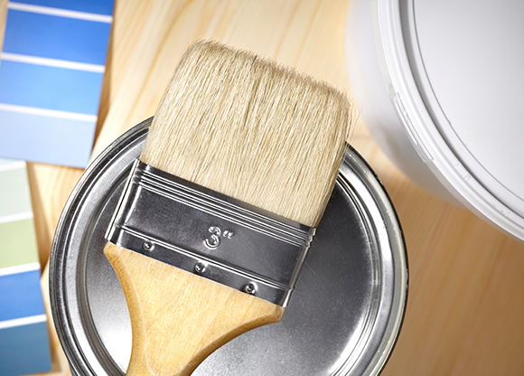

塗料を選ぶために知っておきたいこと

外壁塗装で使われている塗料には多くの種類があり、耐久年数の長い塗料や遮熱効果がある塗料、価格の安い塗料などさまざまなものが存在しています。外壁塗装を行う際は、予算や目的に応じて業者が塗料を提案してくれますが、自分なりの基準を持って塗料を決めたいという方も多いのではないでしょうか。こちらのページでは、お住まいや暮らし方に合った塗料を選べるよう、塗料の基礎知識についてご案内します。
塗料の分類
外壁塗装に使われる塗料の分類でもっともメジャーなのは、成分による分類です。塗料は成分によって寿命が大きく変わるため、まずはここを押さえておきましょう。
| 塗料の種類 | 一般的な耐久年数 |
|---|---|
| アクリル系塗料 | 6～7年 |
| ウレタン系塗料 | 8～10年 |
| シリコン系塗料 | 12～15年 |
| フッ素系塗料 | 15～20年 |
耐久年数が上がるほど、価格は高くなります。現在、価格と耐久性のバランスが優れていると言われているのはシリコン系塗料です。また、アクリル塗料はほとんど使われていません。もちろんこの表は簡略化した情報なので、同じ種類でも品質によって価格は変わりますし、「水性」と「油性」でも特性が変わってきます。
「水性塗料」（水系）と「油性塗料」（溶剤系）の違い
上記で紹介した塗料には「水性」と「油性」の分類があり、おもな違いは次の通りです。
| 水性塗料 | 油性塗料 | |
|---|---|---|
| 塗料の主成分 | 水 | 有機溶剤(シンナーなど) |
| 内装への使用 | できる | できない |
| 保管 | 特に注意は必要としない | 注意が必要 |
| メリット |
|
|
| デメリット |
|
|
用途に応じて得手不得手があるため一概に「どちらが良い」とは言えません。水性塗料は環境への負担が少なく、工賃も手間も人件費も安くすむため大手メーカーが主に使用しています。一方で油性塗料は、一般的に水性塗料よりも長持ちするとされているため、品質重視の外壁塗装でよく用いられています。
「つや有り塗料」と「つや消し塗料」
外壁塗装に使われる塗料は「つや消し」「3分つや」「5分つや」「7分つや」「つや有り」という5タイプに分けられます。「5分つや」は「半つや」、「つや消し」は「マット仕上げ」と言われることもあります。以下は、「つや消し」と「つや有り」の性能の違いです。
| つや消し | つや有り | |
|---|---|---|
| 見た目 |
|
|
| 汚れのつきにくさ |
|
|
| 耐久性 |
|
|
基本的にはつやはあったほうが性能は高くなりますが、より上品に仕上げたい場合や、外壁の素材との相性を考えた場合はつや消しも選択肢に入ります。その場合、「つや消し剤」を添加した塗料よりも、もともとつや消しタイプで作られている塗料を選んだ方が性能的に高い傾向にあります。
1液型塗料と2液型塗料
塗料の性能を大きく左右する要素として、「1液型」と「2液型」があります。1液型塗料は、缶を開けてそのまま使える一般的な塗料です。2液型塗料は、缶が「主剤」と「硬化剤」に分かれていて、塗る時に2種類の溶剤を混ぜて塗ります。2液型塗料は計量が必要になるため手間がかかり、技術も必要ですが、そのぶん仕上がりが美しく耐久性も高くなります。
付加機能を加えた塗料
技術の進歩にともなって、塗料にもさまざまな機能が追加されるようになりました。上記の分類とは別に、ひとつの判断基準になるでしょう。
セラミック入り塗料
「ウレタン」「シリコン」「フッ素」の塗料には、セラミック入りのものがあります。塗料にセラミックを混ぜることで、外壁を汚れにくくすることができます。なぜセラミックが入ると汚れにくくなるかと言うと、セラミックには静電気を発生しにくくする効果があるため、空気中に漂っているチリやホコリを寄せ付けなくなるのです。また、セラミックの成分が外壁表面に浮き出て固まり、雨で汚れが洗い流されやすくなる効果もあります。
遮熱塗料
遮熱塗料とは、太陽光を反射することで表面温度が上がりにくくなる塗料です。真夏の場合、一般的な家屋では2℃ほど体感の室内気温が低下すると言われています。薄い色の方が熱を吸収しにくいため、より効果が高まります。
塗料選びのアドバイス
塗料についてのさまざまな基本情報をご紹介してきましたが、「結局どの塗料がオススメなの？」と悩んでしまう方もいらっしゃるかもしれません。そこで、以下に簡単なポイントをまとめました。
塗料選びの注目ポイント
- 1.耐久性で選ぶ
- 何度も塗料の塗り替えを行うのは経済的な負担になり、工事の手間もかかります。今のお住まいにあと何年住むのか、計画に合わせて塗料を選びましょう。
- 2.防水性で選ぶ
- 外壁塗装は見た目だけの問題ではなく、雨や湿気などが建物内部へ浸入するのを防ぎ、建物を長持ちさせることにも繋がります。防水効果のある塗料は、そういった点でおすすめです。
- 3.機能で選ぶ
- 直射日光の厳しい立地なら遮熱機能や断熱機能、湿気のたまりやすい場所なら防カビ機能など、暮らしの悩みを解決してくれる機能を持つ塗料を選ぶといいでしょう。
- 4.保証で選ぶ
- 塗料の中には、メーカー保証のあるものもあります。保証内容はメーカーによって異なりますが、安心感を重視したい方にはおすすめです。
西東京で外壁塗装を行っている株式会社 幸成では、お客様の目線に立ったわかりやすく丁寧な塗料のご提案を行っています。ご不明な点などありましたら、お気兼ねなくお問い合わせください。